Washing Machine Repair in Hyderabad Near Me
Professional washing machine repair and maintenance for all brands. Same-day doorstep service with 90-day warranty on all repairs.
Same Day Service
Quick response time
90 Days Warranty
On all repairs
Quality Parts
Genuine and compatible spare parts
No Hidden Charges
Transparent pricing
Washing Machine Repair Services in Hyderabad
Complete washing machine service in Hyderabad including repair, installation, cleaning and maintenance
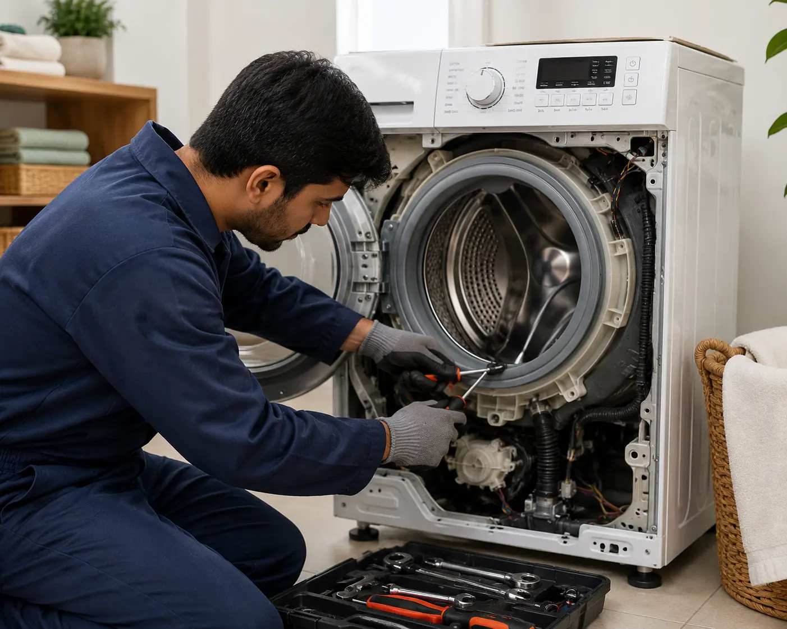
General Repair
Expert diagnosis and repair for all washing machine issues including motor, pump, drum, and electrical problems.
- Motor Repair
- Pump Replacement
- Drum Repair
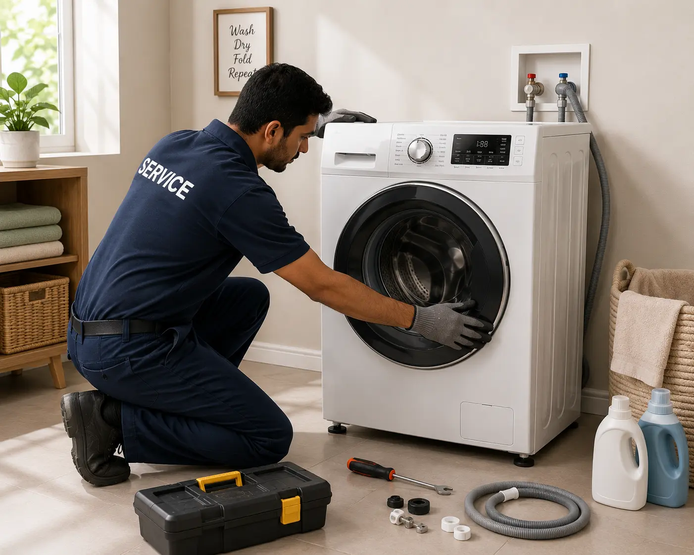
Installation
Professional installation and setup of new washing machines with proper water connection.
- Water Connection Setup
- Machine Leveling
- Test Run & Demo
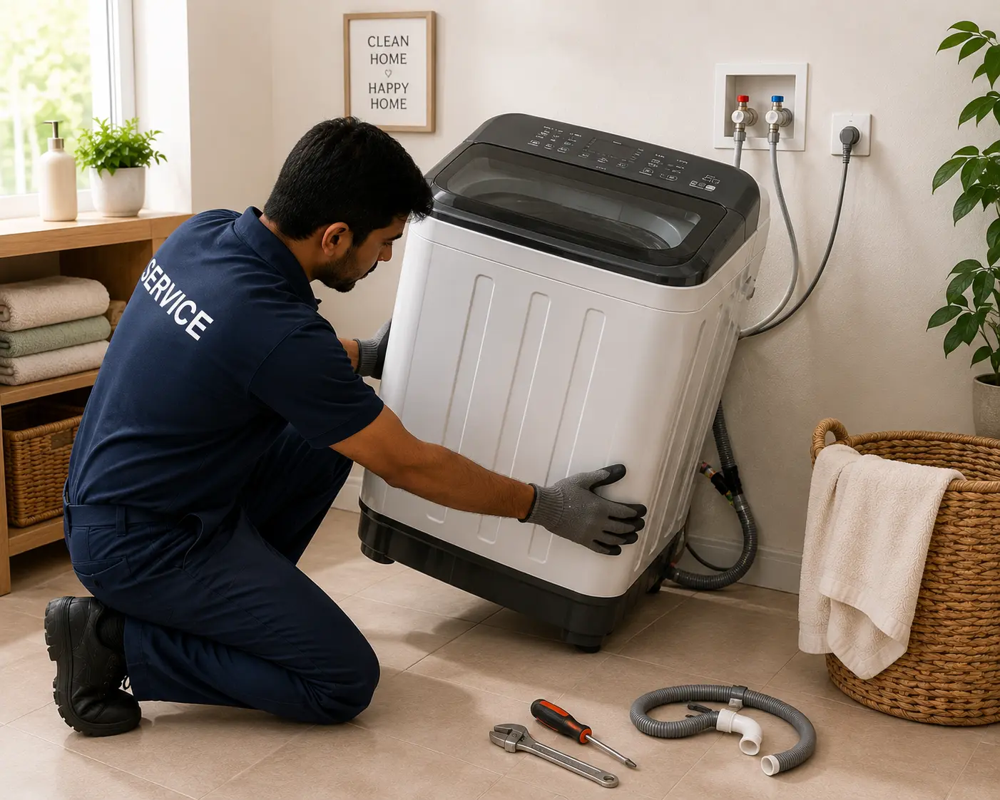
Uninstallation
Safe removal and uninstallation of old or damaged washing machines with proper handling.
- Safe Disconnection
- Pipe Draining
- Damage-Free Removal
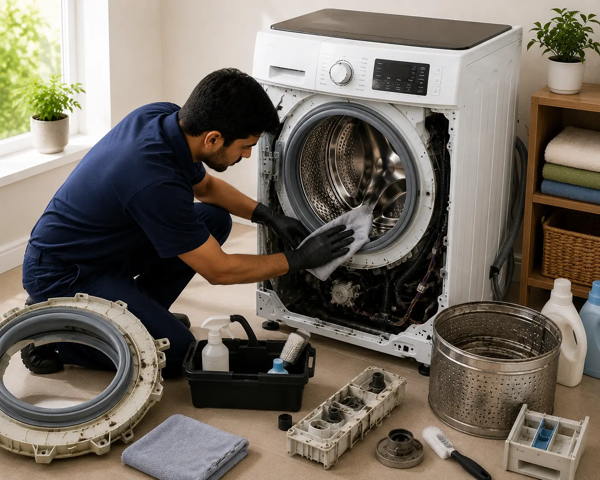
Deep Cleaning
Complete internal cleaning and sanitization to remove dirt, bacteria, and bad odors.
- Drum Cleaning
- Pipe Flushing
- Sanitization
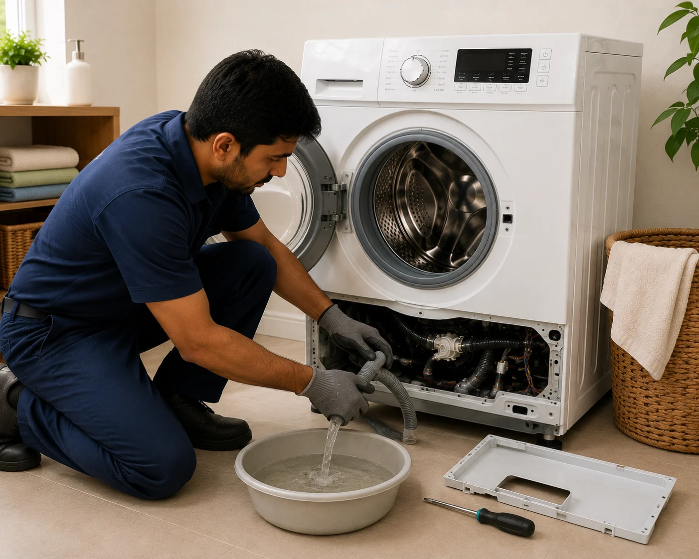
Water Drainage
Fix water drainage problems, blocked pipes, and water leakage issues efficiently.
- Pipe Unclogging
- Pump Repair
- Leak Fixing
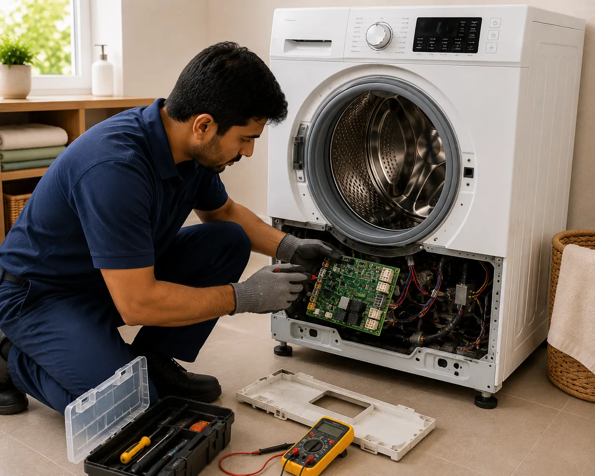
PCB Repair
Expert repair of electronic control boards and display panel issues.
- Control Board Repair
- Display Panel Fix
- Wiring Solutions

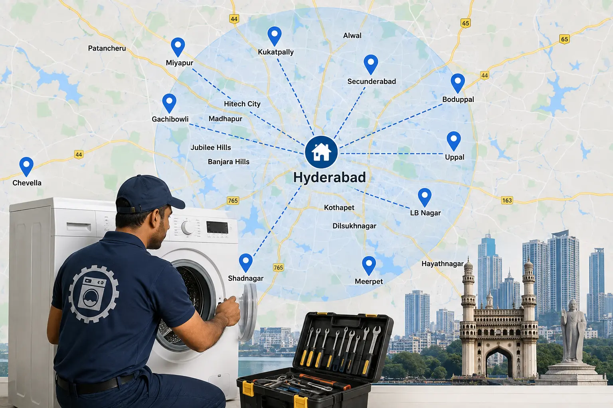
Washing Machine Service Center in Hyderabad
Sm Techno Services is an independent washing machine repair and maintenance service provider in Secunderabad, Hyderabad, serving customers for over a decade. We provide same-day doorstep washing machine repair near you across all Hyderabad areas.
Experienced Technicians
Skilled professionals with years of hands-on experience
Quality Spare Parts
Genuine and compatible parts with warranty
Doorstep Service
Convenient home service across Hyderabad
Customer Support
Dedicated assistance for all queries
Types of Washing Machines We Repair in Hyderabad
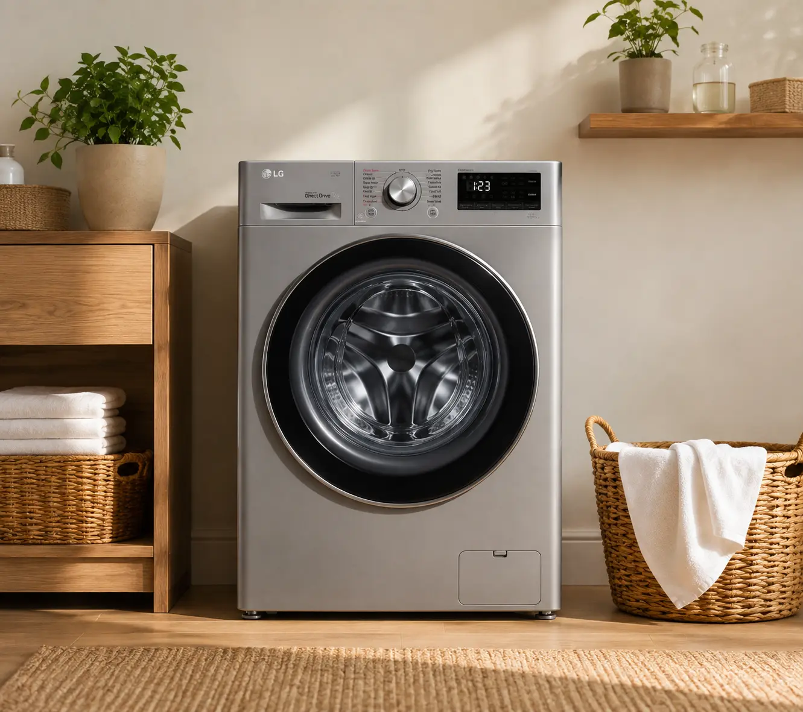
Front Load Washing Machine Repair Hyderabad
Expert front load washing machine repair in Hyderabad. We fix all front load washing machine issues at your doorstep.
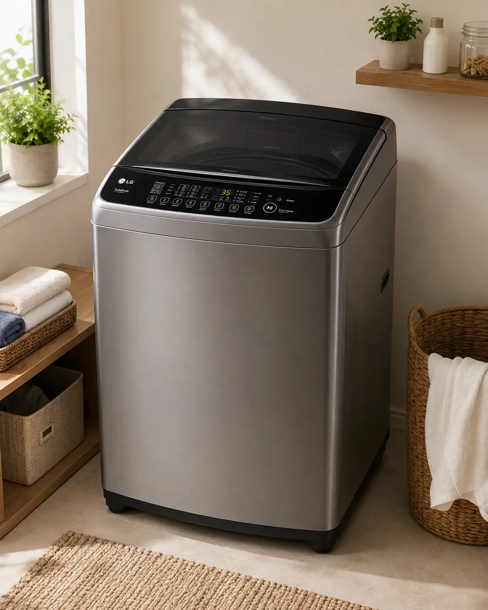
Top Load Washing Machine Repair Hyderabad
Professional top load washing machine repair in Hyderabad. Same-day service for all top load washing machine types.
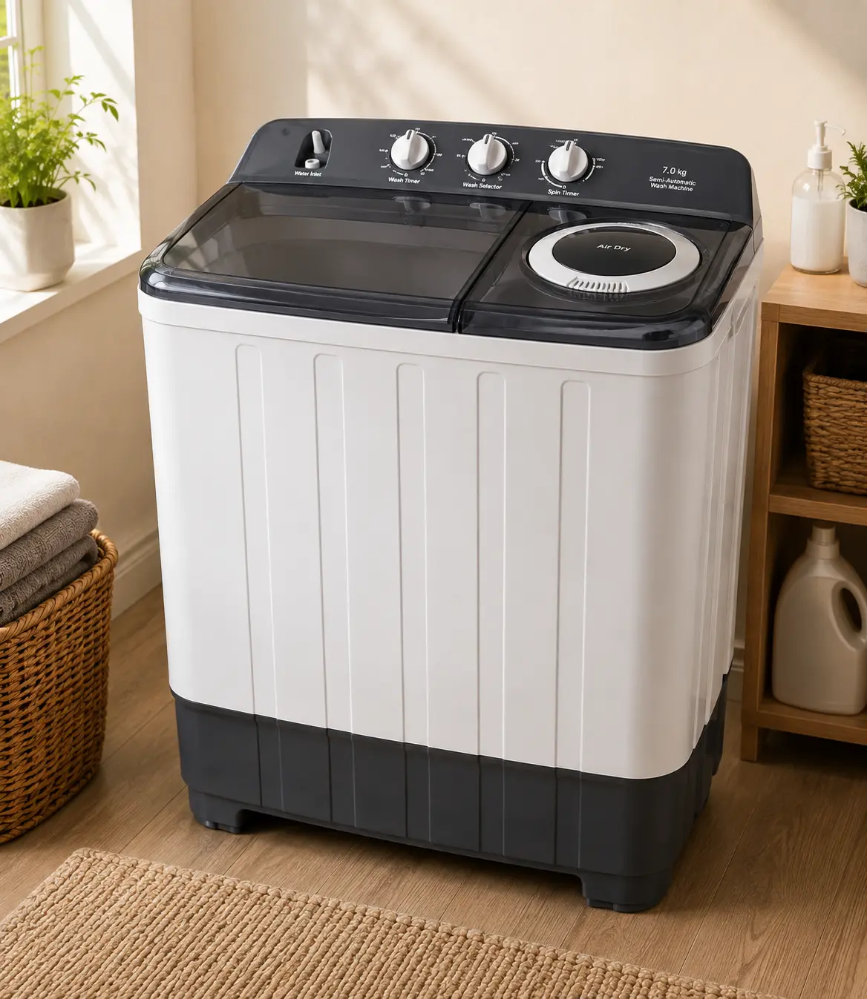
Semi-Automatic Washing Machine Repair Hyderabad
Reliable semi-automatic washing machine repair in Hyderabad. Affordable service for all semi-auto models.
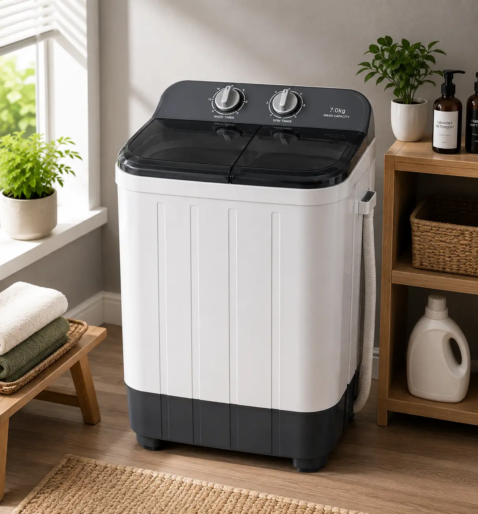
Compact Washing Machine Repair Hyderabad
Specialized compact and portable washing machine repair in Hyderabad. Expert service for small washing machines.
Common Washing Machine Problems We Fix in Hyderabad
Is your washing machine not working? Our expert technicians fix all types of washing machine problems at your doorstep in Hyderabad
Washing Machine Not Working
Complete washing machine not working repair in Hyderabad. Our technicians diagnose and fix all electrical and mechanical issues on-site.
Washing Machine Not Spinning
Washing machine not spinning repair in Hyderabad. We fix motor issues, belt problems, and drum bearing failures for all brands.
Washing Machine Water Leakage
Washing machine water leakage repair in Hyderabad. Expert fix for pipe connections, door seals, and drainage system leaks.
Washing Machine Not Draining
Washing machine not draining repair in Hyderabad. We unclog drain pipes, fix pump issues, and restore proper water drainage.
Washing Machine Making Noise
Strange noises from washing machine? We fix bearing, drum, and motor issues that cause unusual sounds during operation.
Washing Machine Not Heating
Water not heating in washing machine? We repair heating elements, thermostats, and control boards for all washing machine types.
Washing Machine Brands We Repair in Hyderabad
We repair all major washing machine brands available in India
Disclaimer: Sm Techno Services is an independent third-party service provider. We are not affiliated with, authorized by, or endorsed by any of the brands listed below. All brand names and logos are used solely to indicate the types of appliances we service. Brand logos are property of their respective owners.

![IFB]()
![Godrej]()
Sm Techno Services is an independent third-party service provider. We are not affiliated with, authorized by, or endorsed by any of the brands mentioned on this website. All brand names, logos, and trademarks are the property of their respective owners. We provide repair and maintenance services for out-of-warranty appliances using compatible third-party parts unless genuine parts are specifically requested and available.
Brand-Specific Washing Machine Repair in Hyderabad
Expert washing machine repair service near me for all major brands in Hyderabad and Secunderabad
LG Washing Machine Repair Hyderabad
Professional LG washing machine repair in Hyderabad. We fix LG front load, top load, and semi-automatic washing machines. LG washing machine service near me with same-day doorstep repair and 90-day warranty.
Samsung Washing Machine Repair Hyderabad
Expert Samsung washing machine repair in Hyderabad. Samsung washing machine service near me for all models including EcoBubble, AddWash, and Digital Inverter. Same-day Samsung washing machine service in Hyderabad.
IFB Washing Machine Repair Hyderabad
Reliable IFB washing machine repair in Hyderabad. IFB washing machine service near me for front load, top load, and fully automatic models. Quick IFB washing machine service in Hyderabad with warranty.
Whirlpool Washing Machine Repair Hyderabad
Quality Whirlpool washing machine repair in Hyderabad. Whirlpool washing machine service near me for all types. Expert Whirlpool washing machine service in Hyderabad with genuine parts.
Bosch Washing Machine Repair Hyderabad
Professional Bosch washing machine repair in Hyderabad. Bosch washing machine service near me for front load and top load models. Same-day Bosch washing machine service in Hyderabad.
Haier Washing Machine Repair Hyderabad
Expert Haier washing machine repair in Hyderabad. Haier washing machine service near me for all washing machine types. Quick Haier washing machine service in Hyderabad with 90-day warranty.
Godrej Washing Machine Repair Hyderabad
Reliable Godrej washing machine repair in Hyderabad. Godrej washing machine service near me for front load, top load, and semi-automatic models. Professional Godrej washing machine service in Hyderabad.
Panasonic Washing Machine Repair Hyderabad
Quality Panasonic washing machine repair in Hyderabad. Panasonic washing machine service near me for all models. Expert Panasonic washing machine service in Hyderabad with doorstep repair.
Washing Machine Repair at Home in Hyderabad
Washing machine home service in Hyderabad. Our technician comes to your home for washing machine repair near me
Looking for washing machine repair at home in Hyderabad? Sm Techno Services provides convenient washing machine home service across all areas of Hyderabad and Secunderabad. Our expert washing machine technician near me will visit your home to diagnose and repair your washing machine on-site.
Whether you need front load washing machine repair in Hyderabad, top load washing machine repair in Hyderabad, or semi-automatic washing machine repair, our washing machine home service team is ready to help. We provide same-day washing machine home service in Hyderabad with 90-day warranty on all repairs.
Washing Machine Repair Service in All Hyderabad Areas
Same-day doorstep washing machine repair service near you across Hyderabad and Secunderabad
How Our Washing Machine Repair Service Works
Contact Us
Call us or fill the form to book a service
Technician Visit
Our expert will visit your home
Diagnosis & Repair
Quick diagnosis and professional repair
Service Complete
Quality check and warranty provided
What Our Customers Say
Need Washing Machine Repair in Hyderabad? Call Sm Techno Services
Get same-day doorstep washing machine repair from our expert technicians. Call now for immediate assistance!
Frequently Asked Questions
Find answers to common questions about our washing machine repair services
Yes, we provide same-day doorstep washing machine repair service across Hyderabad and Secunderabad. Call us at +91 9908473572 to book an appointment.
We repair all major washing machine brands including LG, Samsung, Whirlpool, Bosch, IFB, Haier, Panasonic, Godrej, Videocon, and Onida.
Yes, we provide a 90-day warranty on all washing machine repairs. We use genuine and compatible spare parts depending on availability.
We repair all types of washing machines including fully automatic front-load, fully automatic top-load, semi-automatic top-load, and compact/portable machines.
We provide washing machine repair service across all areas of Hyderabad and Secunderabad including Hitech City, Gachibowli, Madhapur, Kondapur, Kukatpally, Miyapur, Ameerpet, Begumpet, Jubilee Hills, Banjara Hills, KPHB, Dilsukhnagar, Uppal, LB Nagar, Mehdipatnam, Manikonda, Kompally, Ranigunj and many more.
Our services include general repair, installation, uninstallation, deep cleaning, water drainage fix, and PCB board repair for all washing machine brands.
We are open Monday to Saturday from 8:00 AM to 8:00 PM, and Sunday from 9:00 AM to 6:00 PM.
Yes, all our services are provided at your doorstep. Our technician will visit your home in Hyderabad or Secunderabad to diagnose and repair the washing machine on-site.
Yes, we provide LG washing machine repair in Hyderabad. Our LG washing machine service covers all LG models including front load, top load, and semi-automatic. Call us for LG washing machine repair near me in any Hyderabad area.
Yes, we provide Samsung washing machine repair in Hyderabad. Our Samsung washing machine service covers all Samsung models including EcoBubble, AddWash, and Digital Inverter. Contact us for Samsung washing machine repair near me across Hyderabad.
Yes, we provide washing machine not spinning repair in Hyderabad. Common causes include motor issues, belt problems, and drum bearing failures. Our technician will diagnose and fix the spinning issue at your doorstep.
Yes, we provide washing machine water leakage repair in Hyderabad. Water leakage can be caused by faulty door seals, pipe connections, or drainage issues. Our technician will find and fix the leak at your home.
If your washing machine is not draining, contact us for washing machine not draining repair in Hyderabad. We fix clogged drain pipes, faulty pumps, and drainage system issues. Same-day service available across Hyderabad.
Yes, we specialize in front load washing machine repair in Hyderabad. We repair all front load washing machine brands including LG, Samsung, Bosch, IFB, and Whirlpool. Expert doorstep service with 90-day warranty.
Yes, we provide top load washing machine repair in Hyderabad. We repair all top load washing machine brands and models. Same-day top load washing machine service near me across all Hyderabad areas.
Our washing machine repair costs in Hyderabad are transparent with no hidden charges. The exact cost depends on the issue and parts required. Call us at +91 9908473572 for a free quote.
Book Your Service
Our Location
Old Bhoiguda, Ranigunj, Secunderabad, Telangana - 500003
Phone Number
Email Address
Working Hours
Mon - Sat: 8:00 AM - 8:00 PM
Sunday: 9:00 AM - 6:00 PM